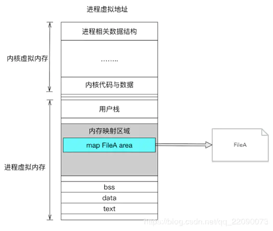

Linux MMAP机制
传统文件IO
虚拟内存被操作系统划分成两块：用户空间和内核空间，用户空间是用户程序代码运行的地方，内核空间是内核代码运行的地方。为了安全，它们是隔离的，即使用户的程序崩溃了，内核也不受影响。

1、调用write，告诉内核需要写入数据的开始地址与长度
2、内核将数据拷贝到内核缓存
3、由操作系统调用，将数据拷贝到磁盘，完成写入
可见，将数据写入文件需要将数据拷贝两次（用户空间到内核空间、内核空间到磁盘文件），再写入到文件中，如果数据量过大，也会有很大的性能损耗。
MMAP（memory mapping）
Linux通过将一个虚拟内存区域与一个磁盘上的对象关联起来，以初始化这个虚拟内存区域的内容，这个过程称为内存映射(memory mapping)。

对文件进行映射，会在进程的虚拟内存分配地址空间，创建映射关系。实现这样的映射关系后，就可以采用指针的方式读写操作这一段内存，而系统会自动回写到对应的文件磁盘上。
MMAP优势
- MMAP对文件的读写操作只需要从磁盘到用户主存的一次数据拷贝过程，减少了数据的拷贝次数，提高了文件读写效率。
- MMAP使用逻辑内存对磁盘文件进行映射，操作内存就相当于操作文件，不需要开启线程，操作MMAP的速度和操作内存的速度一样快；
- MMAP提供一段可供随时写入的内存块，App 只管往里面写数据，由操作系统如内存不足、进程退出等时候负责将内存回写到文件，不必担心 crash 导致数据丢失。
代码示例:
1 |
|
视频:Linux MMAP机制